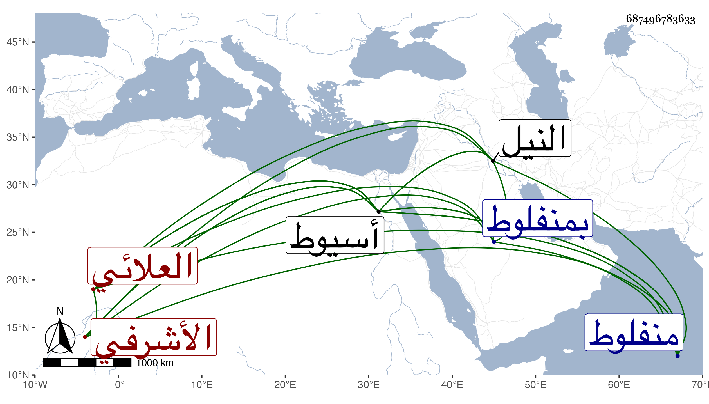

0902Sakhawi.DawLamic.ITO20230111-ara1.EIS1600.687496783633
Biography ID: 687496783633
1098
سيباي العلائي الأشرفي اينال ، كان في أيام استاذه خاصكيا ثم نفي في أيام الظاهر خشقدم إلى منفلوط ، فاستمر بها جميع مدته ثم رجع بعده على خاصكيته ثم ولاه الأشرف قايتباي بعناية الدوادار الكبير الكشف بمنفلوط ، فقام العرب في وجهه وطردوه طردا كليا فرجع بعد قبضه على محمود شيخ بني عدي فأعطاه إمرة عشرة ، ورجع في خدمة الدوادار وحينئذ ضخم وتمول ومهد الوجه القبلي وكان مع مزيد ظلمه سيما في المساحة يظهر محبة جماعة من الفقهاء والفقراء والرغبة في سماع القرآن والانشاد ويبر من يتردد إليه منهم بل كانت عليه رواتب لبعض ديور النصارى محتجا بقصد من يرد عليهم من المسلمين خصوصا وهو يكثر الخروج للصيد ويقيم عندهم فيها ولم يزل في نمو إلى أن قتل في ليلة الجمعة ثالث رجب سنة خمس وثمانين بمخيمه على شاطىء النيل قريبا من طما من أعمال أسيوط ولم يعلم قاتله بل وجد مشقوق البطن مقطوع اليد ببدنه جراحات أربعة وحمل إلى أسيوط فدفن بها قريبا من قبر ازدمر الحاجب ولم يكمل الخمسين وما تيسر له الحج .
